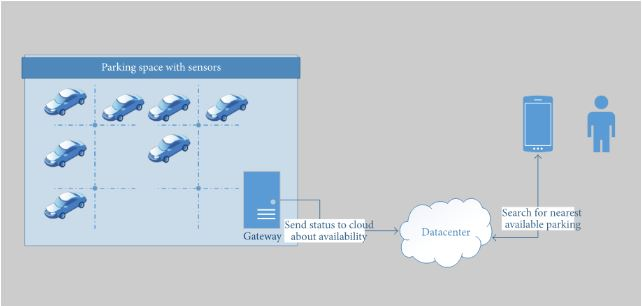
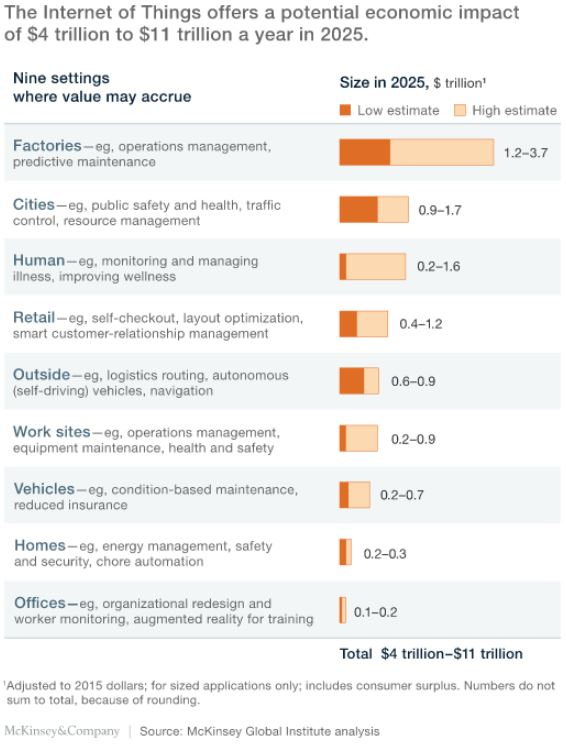

CHAMPIONS
TEAM PROFILE
Fisseha Abate
Student number: s3850910
Ideal Job: Web Development
My name is Fissehatsiyon Abate. My friends call me Fisseha, as my full name is apparently excessively lengthy and somewhat difficult to pronounce, according to them. I was born in the capital of Ethiopia, Addis Ababa. I grew up there until the age of 12 before coming to Australia in late 2014. I can fluently speak two of the eighty languages in Ethiopia. Those I speak are Amharic and Ge'ez. The first five years of my stay in Australia were in Adelaide, South Australia. I recently moved to Melbourne with my family after completing Highschool. I have so far enjoyed the couple of months that I have been here in Victoria. As most Ethiopians are, I am a big follower of Soccer. Although I do not do much playing these days, I passionately support Manchester United F.C. which is a club in England's top soccer league. I also do a lot of drawing and painting in my spare time which I at one-point thought was going to be the career I would pursue. Even though I have not done a lot of artwork, I still consider myself an artist. One rather interesting fact about myself is that I'm one of the 5% of the world's population who does not experience headaches.
Aisha Begum
Student Number: S3854403
Ideal Job: Cyber Security Analyst

My name is Aisha Begum, I am from India. We migrated to Australia when I was 10 years old, at home we usually speak in Hindi. An interesting fact about me is that i can speak around 4 languages Hindi, Urdu, English, and Punjabi. I have completed grade 5 in India and then continued my studies in Australia. I completed year 12 last year, and now I am studying Bachelors of Information Technology, at RMIT. I choose to study IT because of my passion for learning about the way the computer system works and how it allows us to work effectively.
Kevin Nguyen
Student Number: s3657016
Ideal Job: Business/Systems Analyst

I am 100% Vietnamese, born and raised in Melbourne's West. As of now, I have only completed my secondary education moving onto completing my tertiary education with the bachelors of Information Systems, outside of school I love to play volleyball as frequently as I can.
Christodoulos Voulismas
Student Number: s3850105
Ideal Job: IT Operations Manager

My name is Christodoulos Voulismas but most people call me Chris.My student number is s3850105 and my email is chrisvoulismas@gmail.com. I was born in Greece and i lived there for 18 years. I graduated from high school last year and i speak greek and english fluently. Also i am very good at basketball and i enjoy playing because i used to be in a greek team for 7 years.
Kyle Wilkinson
Student Number: 3836778
Ideal Job: Frontend Developer

I was born in Australia and have never been outside the country. I grew up in a small town by the name of Drouin, finished my VCE at the local high school and begun a bachelor of IT at Federation University, After a year and a bit of work, I had to leave. I applied for RMIT and began studies the next year. I now live in a sharehouse with like-minded individuals, study full time and work 4 days a week at Bunnings.
I spend the bulk of my time working and studying and in my downtime I enjoy building recycled furniture, enjoying and creating music and spending valuable time with friends.
Champion Test Outcomes
| Name |
Myers-Briggs Test |
Learning Style |
Test of personal choosing |
| Fisseha Abate |
Adventurer - INFP-T |
Visual Learner |
Creativity Test Score: 7/10 |
| Aisha Begum |
Mediator - INFP-T |
Visual Learner |
Big Five Excel in Agreeableness and Conscientiousness |
| Kevin Nguyen |
Entrepreneur ESTP-T |
Kinesthetic Learner |
Big Five Excel in openness and agreeableness |
| Christodoulos Voulismas |
Protagonist ENFJ-T |
Auditory Learner |
Creativity Test Score: 43 |
| Kyle Wilkinson |
Campaigner - ENFP-T |
Auditory Learner |
Abstract cognitive Test. 8/10 (High) |
INDUSTRY DATA
Burning Glass data, March 2018
Every team member has different ideal jobs according to which they are ranked as shown below. The information shown is collected from “Burning Glass”. Burning glass displays the data of August 2018 to August 2019. The job ranks were available for some of us, unfortunately some were not.
| Name |
Ideal Job |
No. of Job Postings |
Skils Required |
| Kyle Wilkinson |
Frontend Developer; |
1,728 |
IT-specific Skills:
- React
- Redux
- JEST
- Components
- HTML,CSS
- Mocha
- Git
General Skills:
- Problem Solving
- Communication Skills
- Meeting Deadlines
|
| Kevin Nguyen |
Systems Analyst |
13,132 |
IT Skills:
- General knowledge of systems.
- SQL
- Programming
- Networking
- Virtualisation
General Skills:
- Communication Skills
- Stakeholder Management
- Analytical
|
| Fissehatsiyon Abate |
Web Development |
1,785 |
IT Skills
General
- Creative thinking
- Communication
- Instinctive thinking
|
| Christodoulos Voulismas |
IT Operations Manager |
1,700 |
IT - Specific Skills:
- Programming
- Networking
- Good knowledge of computer systems
- Git
General Skills:
- Outstanding communications skills
- Problem solving
- Organizational skills
- Good with teamwork
- Building Effective Relationship
|
| Aisha Begum |
Cyber Security Analyst |
Outside Top 20% However, The demand is increasing by 50% |
IT - Specific Skills:
- Web Analytics
- System Analysis
- JavaScript
- Python
- HTML, CSS
- Networking
General Skills:
- Creativity
- Planning
- Teamwork
- Leadership
- Communication
- Research
|
IT Work
Bill Golding
Bill Golding is the Systems Manager at Val Morgan Outdoor (VMO), an outdoor digital advertising company. Bills job entails the implementation, design, administration and continued support of critical infrastructure for his employer
Bill mostly interacts with internal stakeholders, usually people in his department, the operations department. Bill chats with key investors from within his company such as the sales team, the commercials/concessions department and various other representatives from different partner companies, as well as their hardware and software teams. Other interactions could be advertising partners and clients when they are in need of a tech consultant when issues arise.
Bill spends most of his day completing tasks that are involved with the continued administration of current systems. He takes sole responsibility of all remote monitoring as well for a lot of the high-level resolution of issues across the network.
In Bills position he is challenged with two main obstacles, which are: the difficult technical work that sometimes requires him to learn and research a topic of IT that he is unfamiliar with and the other having trouble dealing with various stakeholders, which can be difficult depending on their needs and cooperation.
IT Technologies
Cloud Computing
What does it do?
In general terms, Cloud computing is the delivery of various, on-demand, hosted computing services, over the internet (hence the term ‘cloud’). Cloud Computing offers a wide range of features such as data storage, servers, databases, software, analytics, intelligence as well as other standard office applications.
Cloud computing can take many forms, falling into four broad categories:
- infrastructure as a service (IaaS)
- platform as a service (PaaS)
- serverless
- and software as a service (SaaS)
These are sometimes referred to as the cloud computing "stack" since they build on top of one another.
Presently, Cloud computing encompasses a wide array of options now, from services as basic as data storage and networking to natural language processing and artificial intelligence as well as other common office applications.
The use of cloud computing is everywhere. Google drive is a great example of cloud computing service, as it has all of its storage online, enabling users to work with Google’s cloud applications; Google Docs, Google Sheets, and Google Slides. (Griffith 2016) Similarly, Netflix also depends on cloud computing services to operate its video streaming service. All in all, it is safe to say that any service that does not require users to be physically close to the computer hardware, that they are using, can now be delivered through the cloud.
The use of cloud computing is everywhere. Google drive is a great example of cloud computing service, as it has all of its storage online, enabling users to work with Google's cloud applications; Google Docs, Google Sheets, and Google Slides. (Griffith 2016) Similarly, Netflix also depends on cloud computing services to operate its video streaming service. All in all, it is safe to say that any service that does not require users to be physically close to the computer hardware, that they are using, can now be delivered through the cloud.
Although difficult to predict the future of a such a rapidly evolving industry, it is however possible to make predictions, by analysing the current trends and usage. Almost everything in this digital era is linked to the cloud computing in some way or another. As tech developers keep modifying and finding new ways to organise, process and present data, cloud computing will become a more and more essential necessity in our lives. With the assist from other technological developments, the quality of Cloud Computing could be improved significantly. With the rise in demand and need of better cloud solutions and methods, it is likely that, in the next three years, most cloud computing service will be mainstreaming of something as complex as super-computing technology (Durrani 2019). With such development on the horizon, it is safe to say the future of cloud computing is very promising.
A technological development that could bring these ideas into reality is quantum computing. Quantum computing is the next ground-breaking development which is set to transform the IT industry. This system uses highly complex quantum physics concepts to enhance the processing power of computers. It stores data in qubits, which is a faster and simpler of form data, thus empowering it to process large and complex data significantly quicker. It does not only provide with faster movement of data through the hardware, but it also ensures smooth flow of information stream. Base on present findings, users will be able to access the quantum computers using the internet. Renowned companies such as IBM, AWS, Microsoft Azure Cloud, and Google Cloud are currently working on quantum computing to bring forth the best cloud-based tools. (Karlsson, 2019)
What is the likely impact?
Prior To the introduction of Cloud computing, users were forced to keep their computing infrastructure or data centres on proprietary hard drives or local storage devices. These practices were extremely problematic as On-site data centres typically require intricate procedures such as hardware setup, software patching, and other time-consuming IT management chores as well as high maintenance costs.
The game changing innovation that is Could computing, removes the need for many of these tasks, as software and platforms are managed by the cloud provider, thus helping users achieving more important business goals and in turn bringing faster innovation and flexible resources to the user.
Cloud computing will mostly affect well stablished companies with the need to store and manage large amount of data. Progressively more companies are moving to using cloud computing technology over the traditional way of working. The recent increase in the amount of companies using Microsofts newest cloud-based collaboration program, Office 365 is one instance of Cloud computing's effect on big enterprises. Cloud service providers will offer companies on-demand computing power that enables them to appropriately invest only for the essential resources they need. As a result, companies can save time and money while making them more agile and responsive. (Alderton 2019)
It is anticipated that, in the next 5-10 years, Cloud computing will heavily affect most IT based jobs. The implementation of cloud computing will drift away IT positions opposed to completely eradicating them. As organisations relocate their services to the cloud, some in-house IT jobs within organisations are predicted to see reduced demand in the future. This could see jobs associated with in-house data and server management lose their positions. (Collabera 2019)
While some IT jobs are predicted to see a decreased demand, cloud providers however will be needing IT staff to take care of data regulation, distribution, and storage. As a result, IT professionals working in such fields will see increased demand.
How will this affect you?
Cloud computing will affect my everyday life in a positive way. My use of Cloud computing will most likely be for storage services. As a student, it is essential to have reliable and easily accessible storage /back-up storage system. In this aspect, Cloud computing does an exceptional job. Once my data is stored in a Cloud storage, it is simpler to get the back-up and recovery of that, which could otherwise be an excessively time-consuming process on-premise. Moreover, most clod storages, such as Google Drive, Mega etc being reasonably priced means that it will also cost-effective. Overall, cloud computing will have a positive impact on my daily life.
A difference that cloud computing could bring is flexibility. Having a cloud storage means that I would no longer need to worry about checking that my data is saved in the 'correct' devices and go through the hassle of carrying hard drives in order to store large files. I would also avoid unfortunate events of forgetting important files stored on physical drives as well as physical damage of file storage devices. With could computing, I can access any data I desire at any time and have significantly larger capacity.
As for my family, cloud computing will bring the similar benefits to of mine, like Cost Savings, Security, Flexibility.
Additionally, collaborative work with friends and colleagues would be revolutionised. Cloud computing increases the efficiency of collaborative works and makes it a simple process. When working in teams, team members can view and share information easily and securely across a cloud-based platform. A great example of such Cloud service Is the platform GitHub, which was in-fact use to produce this project.
AUGMENTED REALITY
What does it do?
Many people believe that virtual reality and augmented reality are the same, but they are wrong. In virtual reality the person experiences a stimulated world and in augmented reality the person experiences computer generated information that enhance reality, such as sounds, videos and graphics. AR, even though sounds futuristic, has been around for years. Augmented reality as a term started from 1990. Nowadays, because of the rapid development in technology, people have started to use AR more. Many use AR every day without even knowing, for example snapchat and Instagram filters. Also augmented reality is very well known in gaming. A very popular game named “Pokemon GO” released by Niantic, is based on AR. Soon, because of the rapid development in technology, AR will improve even more. It will be used frequently to improve and make life easier. People will use AR for many reasons, like writing something on a board that will pop up on the wall using your mobile phone or even wearing some type of special glasses that will help you see a movie on the wall just like a projector. Another example is industrial design. Companies that sell furniture can develop an app that lets you place the furniture in your house with augmented reality to check the dimensions of the furniture and also see if you like the colour.
Eventually AR will be used even in education, there can be interactive boards accessed with a mobile phone or with some special glasses, for maths physics or chemistry. AR could be used in healthcare aswell. For example in diagnosing and monitoring patients. Another way it can be used is in military for advance navigation and marking objects in real life saving them time and making things easier. Also AR could be used in art, for example visual paintings and music.
In order for all of these to happen there has to be some sort of device that will let the user interact with AR. This can be achieved with mobile devices and AR glasses also called smart glasses. These devices are already being used. For example most of the people have a mobile phone or a tablet. Many smartglasses have been released such as Google Glass but still there is a lot of improvement that needs to be done. Companies are also working on making smart lenses taking augmented reality one step even further. Manufacturers like Samsung and Sony are working in the development of AR lenses. Another project that is being developed is Virtual Retinal Displays(VRD) which will create bright and high resolution images by projecting laser light into the human eye. Gaming could also change a lot and take it to another step with AR and let the user interact with the game even more.
What is the likely impact?
In the near future things will start to drastically change with technology. AR will be used almost everywhere. It will make life easier for everyone. People will be able to use AR on a daily basis even in their jobs. It will help people be more efficient on what their doing. For example if someone wants to save something by writing it on a piece of paper it would be easier for him to use AR and just write it on a paper that will pop up on his wall using his mobile phone or smart glasses, and then save it. Then if he one day wants to see what he has written on that paper he could just check his saved files rather than looking to find a paper. This technology will affect the younger generation more since they are the ones who use technology more. It will be hard for older people to get used to AR and learn how to use it. In my opinion, I don’t belive that AR is going to replace people in any job but instead create new jobs. People who will be able to create or use any AR apps will be very demanding from big manifacturers.
In my daily life AR will affect me in a positive way. Since I like technology and I find interesting learning new things, AR will be great for me. I have always seen on movies and videos people using AR or some type of holograph and I always found that astonishing. It would be very nice if I could just talk to my friends or someone in my family with a holograph and feel like they are in the same room with me. Just by wearing smart glasses I will be able to pop up a list infront of me and see my to do list. Also I believe it will affect my family and my friends in a positive way too. It will help them all in different ways. They will be able to watch videos or check the news while doing something else just by wearing some special machine on their heads. They will also be able to play games based on AR or call someone and their face will float infront of them while they have gone for a walk, just like the movies. As the time goes by, im sure AR will improve rapidly and new features will come out.AR will change a lot of things and also the way people live. It will make life easier and also help many people be more eficient in their jobs.
BLOCKCHAIN AND CRYPTOCURRENCIES
What does it do?
Cryptocurrencies are a new form of digital currency that is built in a way that prevents fraud by counterfeit and double spending. Cryptocurrencies do not have a centralised network they are run from and are not released by any form of authority, removing the risk of any interference or manipulation from governments. Most cryptocurrencies take advantage of blockchain technology to ensure the integrity of transactions. Blockchain technology is a organisational method for recording transactions, it works by creating records of information about each transaction which is then put into a block, each block is connected to the previous block by validating each other’s hash codes (identification code), the connection of all the blocks is dubbed chain, hence Blockchain. There are currently many types of cryptocurrencies, some with specific purposes, the largest and most well-known is Bitcoin. Bitcoin is seen as the first decentralised cryptocurrency, released in 2009 it slowly gained popularity and reach its peak value on 15/12/2017, being worth over $25,000 AUD.
Currently Blockchain technology is used by cryptocurrencies as the basis of their construction. The use of blockchain technology is slowly expanding, companies are beginning to take advantage of it. Banks have begun implementing this technology throughout their systems. Banks will benefit from the use of Blockchain because it will allow them to validate transactions outside the usual business hours of 9-5, Monday to Friday. The implementation of blockchain into banks would help them create records that can be called upon easily and would also be near tamperproof.
What is the likely impact?
Blockchains and cryptocurrencies have a large potential for growth in the future. Blockchain will help the supply chain of goods and products by helping customers ensure they know what they are buying and where it is from, for example, jewellery companies could use it to check the history of particular gems to assure customers that they are not stolen or from a place that could finance war. The healthcare system could use blockchain technology to access patient’s medical history, with them also being stored and controlled by the patient themselves. Blockchain also has potential with governmental voting, creating a tamper-proof system to ensure election returns aren’t falsified.
INTERNET OF THINGS
What does it do?
We are living in a digital era where smart technology revolves around our everyday life, one field of this technology is the Internet of Things . The Internet of Things is an ubiquitous technology and has an omnipresence in our lives one way or another. Kevin Ashton first coined this technology in the RFID Journal in 1999 under the title “Challenges to the Network” and later changed the name in 2005. Kevin’s vision was to enable devices to communicate their information about physical objects through the web.
In a more modern description, the Internet of Things can be defined as a paradigm of objects interconnected through the network in order to achieve a complex task. Internet of Things devices are usually equipped with sensors, actuators and processes embedded into physical objects such as printers, industrial machines, headphones etc…
Actuators, sensors, processes and communication networks essentially make up the main infrastructure of the Internet of Things framework. To get a deeper understanding we must look into the individual physical components of the core framework of the Internet of Things.
The term sensor can be thrown around and is a broad description, but definitively, it is a device that interacts and collects data from the physical environment. A mobile phone can be depicted as a sensor, or even a microphone. The sensor converts a physical element into an electrical impulse that can be stored and processed into data. For example, a microphone is a sensor that can pick up vibrational energy and translate it into data the system can understand.
For instance, IBM utilized the Internet of Things for Norwegian Sea oil platforms by utilizing sensors at the seabed that are used to collect real-time information to make the correct decisions on which seabed to drill.
An actuator operates oppositely to how a sensor works, the actuator awaits an electrical impulse and translates it into a physical action. There are many types of actuators; electrical, hydraulic and pneumatic.
For example, we can take a look into a smart house that includes many functions of actuators. Locking and unlocking the door is a function of an actuator, as well as switching the lights on/off, setting alarms off and controlling the temperature through a thermostat.
The Internet of Things is a very complex heterogeneous network that does not have a specific state of the art function but allows for certain industries and applications to be elevated and function more effectively. The Internet of Things has had an impact and has sought to be very beneficial to the healthcare industry. Sensors are used to gather real-time information on various health parameters throughout the whole body. This allows for monitoring patient’s health when they are not in the hospital. Smart watches are now being developed with embedded sensors to measure the heart rate of consumers.
In the near future, we might be able to see an implementation of the Internet of Things to our cities, bringing us closer to a ‘smart city’. A smart city can be defined by increasing the quality of service to citizens, creating efficiency and reducing operational costs. This can be done by:Implementing sensors to detect if parking spaces are free or occupied. This data is collected and uploaded for citizens to check and get a quick and easy parking spot.

Implementing sensors to monitor traffic conditions around the city. This data can be collected and further analysed to predict future traffic conditions.
What is the likely impact?
The Internet of Things sensors and actuators interconnected by networks has the potential to fundamentally change the way we interact with our environment. A McKinsey Global Institute report, The Internet of Things: Mapping the value beyond the hype, takes a look on how the Internet of Things can derive economic value.
In order to determine Internet of Things potential benefits, McKinsey globally analysed 150 use cases, ranging from healthcare sensors to manufacturers that utilize sensors to optimise their equipment. McKinsey concluded that the Internet of Things has an estimated economic impact of $3.9 trillion to $11.1 trillion a year by 2025. At its peak, the economic value it could potentially generate would be equivalent to 11 percent of the world economy.

If this impact is achieved, Internet of Things technology will play a critical role in developing and optimising the right systems and processes. But in order to achieve this figure, interoperability between Internet of Things systems is critical.
McKinsey believes that customers will reap the most benefits of Internet of Things technology, capturing 90 percent of the value that Internet of Things applications generate. Such as being able to buy more efficient machinery or services and software.
How will it affect me
In my opinion, my ideal world in the future would be an interconnected world, networks connected to networks, nodes connected to nodes; collecting and sharing data. But in order for this to happen, as McKinsey stated, interoperability between networks would have to be critical.
But in a hypothetical situation, if Internet of Things technology were connected, I could make better decisions when travelling to and from places, evaluating which roads have the least traffic, or depicting where free parking spots are.
For me and my family, we would look into developing a smart home where there are sensors and actuators connected to the network with other Internet of Things technologies communicating with each other. Some examples include:
- Using home hubs to switch lighting or cooling/heating on/off.
- Smart security systems - biometric locks, motion triggered cameras, smart doorbells.
- Smart appliances e.g. refrigerators and stoves.
PROJECT IDEAS
This Home Security System works simple, this system recognises the users with their fingerprints and their voices they will have to be registered before they can have access to the system. The doors do not have handles and the user do not need to carry a key to be able to unlock the door, the user can unlock using their fingerprints. After entering they can also be recognised as they speak for example if they would like to check the cameras all they have to say is “Access Cameras” and the system will automatically turn on the TV and you would be able to check the cameras, this could be accessed in many different languages.

To able to allow guests to enter the house, any registered members could say “Grant Access” to allow them to enter the house or they can scan their fingers from inside the house and the door will open. However, before opening the door the system will scan if a person is safe to enter you will hear “Access Granted” after scanning has completed and the door will open (this would take about 20 – 30 sec) however if they are carrying any sort of weapons or are unsafe you will hear “Access Denied” and the alarm will be turned on automatically after 20 seconds meanwhile the system would show you why it has blocked access, however, if you think it’s an error and you would like the person to enter you would be able to allow access from inside the house by stopping the alarm and giving access.
While Parents are away they can check on their children easily just by texting on the security app which will be linked to the security system all they have to do is to text “what is everyone in the house doing” the application would reply by checking the sensors that are in use for example “ they are 5 people in the house 2 people are detected in the study room and the rest of them are in the living room.
Parents can also give a message to all their children present in the house at once they do not have to individually call each one of them to inform them. On the app they can message saying “a message for family” and then they can either video record, audio record or just text (the system will read it out to everyone). An example for video/audio message “A message from ___ playing audio/video” for a text is “___ has sent a message saying “……”” the listeners can re-listen to a message as many time as they want, messages will be deleted after 24 hours a message could be saved by any registered member using the app, they will have private access to the message.

The likely problems users may face are caused due to loss of power and Wi-Fi, as the system is electronic we need to make sure that the users can enter and exit the house in any circumstances, the huge concern is to make sure that only registered members can enter even if there is no power. As the system can't work during a power outage, we concluded that a Backup Battery is the best option for the user to continue using the app, as it will provide power to the system when the primary source of power is unavailable.
Furthermore, the problems user could face may include registering newborn, people with disabilities, and people with special needs into the system, this could be solved by providing the users to use other biometric Authentication such as voice recognition and face recognition. Newborn could be registered as a dependent under parents or other registered members, the dependant users will have to enter and exit the house with an independent user.
PERSONAL FEEDBACK
Aisha Begum: In my opinion we all did the teamwork in an efficient manner and the outcome of which is we were able to complete the assignment before the deadline. All the team members were helpful in resolving any issue or solving the queries. As a team we all worked very well and did excellent job.
Christodoulos Voulismas: I believe that as a team we did very good, completing the assignment on time, managing to be on time in every meeting and also doing the work everyone needed to do. I am happy with the outcome and happy to work again with this team.
Kyle Wilkinson: I personally had a great time working with this team. I havent previously worked with a group where most of the team were verbal about the tasks at hand and I was suprised at how active everyone was during each meeting. It was quite a pleasant suprise. The team worked quite well together during this assignment.
Kevin Nguyen: Joining mid-way into the project, I was a little anxious about the team dynamics, but after one group meeting with the team, I could tell the work was delegated evenly and members were willing.
GROUP REFLECTION
What went well
Aisha Begum: Our communication and timeliness to finish task on time. Using Microsoft Teams, we were able to communicate well between one another from organising what had to be done, when to finish the task, how everyone was going to more general things. This was extremely fantastic as the current condition of work with everyone being home and not being able to see each other meant that being able to communicate when possible was very important to the group’s cohesion and assignment. Our group has display countless time where we were able to respect each other’s work and outside requirements in which we were able to always come to an agreement and meet each other’s needs.
Christodoulos Voulismas: I am very happy with my team and with the chemistry we had. We managed to help each other if anyone needed some explanation or needed some help either with github or with html. Everyone was on time when we had a meeting and were very kind. Also everyone delivered their work on time so that helped us work on the assignment and be efficient. Working with this team helped me understand more my teammates and learn things about them as well.
Kyle Wilkinson: I was extremly happy with the teamwork displayed during the assignment. Everyone was punctual and showed up to the group meetings. The group worked around the isolation restrictions quite well. Although most of us have never met, we were able to comunicate online quite well, which led to work delegations going smoothly and everyones agreeableness on ideas was great.
Kevin Nguyen: Happy with the good flow of communication. Everyone took initiative and played their part.
What could be improved
Aisha Begum: We should have discussed the meetings and decide the topics before meeting. Other than that every member was very respectfull and motivated towards the assignment.
Christodoulos Voulismas: I guess the one thing that could be improved was to tell before the meeting what we would do rather than that everything was perfect.
Kyle Wilkinson: One thing that could have been improved would be a bit more organisation from the start of the project, we lost a member early on and picked up Kevin halfway through. Having Kevin apart of the Champions team from the start would have been helpful.
Kevin Nguyen: To reiterate, planning a topic to discuss before having a group meeting would’ve been helpful, on some rare occasions we would sit in silence, but nevertheless we still worked through it.
At least one thing that was surprising
Aisha Begum: Each and every member of the group was ready to help others to fix any problem or to clear any query. All the work assigned was completed efficiently.
Christodoulos Voulismas: Even though we had never met before it was surprising that we managed to communicate and work together and also get to know each other.
Kyle Wilkinson: I was quite suprised with how well the whole team worked through COVID-19. Although we never met face to face, we we're about to communicate and work efficiently as a group from behind our own screens.
Kevin Nguyen: Everyone was very supportive and helpful and there was a good flow of communication, which really guided me on the right track because I joined the project mid-way.
At least one thing that you have learned about groups
Aisha Begum: By working in a group I have learned that I can tackle more complex problems easily, than I could do on my own. Through working in a group, I have developed the skills of understanding each member and their point of view.
Christodoulos Voulismas: Working as a group i learned that it is not as easy as working on your own but in a group you can do more work faster and also help each other.It was a nice and interesting experience.
Kyle Wilkinson: I've learnt that I should rely on others more-so than I usually do. My team performed really well in each of their own areas and I should have expected more than I did at the start.
Kevin Nguyen: Regardless of absurd circumstances, if there are like-minded people, the work will be done.